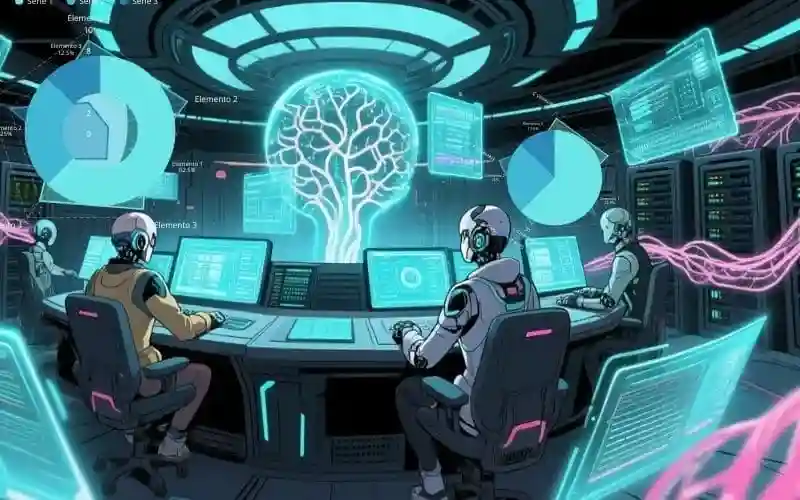

"Si no controlas tus datos, eres solo un dato más. ¡Actúa o sé un conjunto de bits procesados!"
¡Ponte en marcha o sé un zombie digital!
¡Atención, soldados de la privacidad! Soy QOACH, su sargento de ciberseguridad. ¿Saben qué es peor que un virus informático? ¡Ustedes compartiendo su ubicación mientras compran papel higiénico! ¡Eso es un autogol épico!
He recibido esta transmisión de este pasivo tiempo, y debo ser brutalmente honesto: la situación es patética. Estas 'grandes corporaciones' les tienen más controlados que un qu-virus a un código de circuito defectuoso.
El Desafío del 'Presente Patético' (y sus hábitos suicidas)
En 2025, ustedes lloran por la privacidad mientras publican: "¡Hoy comí brócoli! #Saludable". ¡Eso no es un problema, es un desastre de entrenamiento! Sus datos son como músculos: si no los ejercitan... ¡se atrofian en manos de Mark Zuckerberg!
Tus datos son tus recursos más valiosos, ¡y los has regalado por un 'like' o un filtro de cara de perro! ¡Eso es una debilidad, no una crisis!
RÉGIMEN QOACH #1: ¿Publicaste algo hoy? ¡BÓRRALO! ¿Diste "like" a un gato? ¡HAYA PENITENCIA! 20 flexiones de ciber-resistencia. ¡Ahora!
"Su 'autonomía digital' está más flácida que un pan de tres días. ¡Levanten ese glúteo de la pereza y encripten!"
La 'Ley de Soberanía de Datos': ¡Bootcamp de Supervivencia!
En 2057, la humanidad por fin hizo sentadillas de privacidad. ¡Se crearon "Gimnasios de Datos" donde la gente levantaba pesas de cifrado binario! ¿El resultado? Corporaciones suplicando: "Por favor, danos tu fecha de nacimiento... ¡te daremos un cupón de café!"
Y los humanos, con el pecho inflado de orgullo, les ofrecieron y aceptaron lo que les dio la gana. ¡Eso es poder!
¡Ejercicios QOACH para ser un guerrero digital!
- Flexión de Firewall: Cada vez que veas un anuncio de algo que hablaste por teléfono... ¡20 flexiones! ¡Eso fue espionaje!
- Sentadilla de Encriptación: Antes de subir una foto, pregunta: "¿Querría mi abuela ver esto?" Si la respuesta es no... ¡no la subas! (A menos que tu abuela sea cool).
- Plancha de Privacidad: Mantén tu teléfono boca abajo durante reuniones. ¡Así no te espiarán por la cámara! ¡Y fortaleces el core!
¡Plan de Entrenamiento de 30 Segundos (para vagos extremos)!
¿No tienes tiempo? ¡Mentira! Tienes tiempo para ver videos de perritos. ¡Haz esto AHORA:
- Paso 1: Cambia tu contraseña. ¡No uses "123456"! ¡Usa "Qoach_ElMejor"! (Más segura y motivadora).
- Paso 2: Desactiva el micrófono de tu TV. ¡No necesita escucharte suspirar por el amor!
- Paso 3: Di en voz alta: "YO controlo mis datos". ¡Repite 3 veces! ¡Eso es programación neurolinguística barata!
- Nota: Si compartes esto... ¡me debes 10 flexiones! ¡Qoach siempre cobra!
¡Versión HIIT: Plan de Entrenamiento de 15 Segundos!
¡No pierdas más tiempo! Levántate de la silla. Para empezar a ganar tu soberanía, haz esto:
-
Paso 1: ¡Baja esa mano de 'me gusta'! Antes de darle a cualquier botón, pregunta: "¿Esto beneficia mi optimización o solo mi ego?". Si la respuesta es la segunda, ¡NO LO HAGAS!
-
Paso 2: Desactiva todas las notificaciones innecesarias. El cerebro humano no está diseñado para ser un esclavo del 'ping'.
-
Paso 3: ¡Haz una copia de seguridad de tu mente! No, en serio. Escribe tus metas en papel. Es un formato analógico indestructible que ninguna corporación puede hackear.
-
Nota: Lucha por "No al yoismo", son kks de verdad, a nadie le interesa tu tostada con mermelada mañanera.
¡Grito de Guerra Final (y descarga de adrenalina)!
"¡Tus datos son tu armadura digital! ¡Cada 'me gusta' sin pensar es un agujero en esa armadura! ¡La próxima vez que una app pida acceso a tus contactos... ¡pregúntate: 'Le daría yo las llaves de mi casa a un desconocido?'! ¡Si la respuesta es no... ¡NO LE DES TUS CONTACTOS! ¡Es más fácil que hacer lagartijas! ¡AHORA MUEVE ESE DEDO Y BORRA HISTORIAL! ¡QOACH FUERA... A CORRER!"
FRASE MOTIVADORA EXTRA: "No esperes a que te hackeen la vida... ¡encripta tus sueños como si fueran la receta secreta de la felicidad!"
Si mi motivación es provocadora en este tema pues ya sabes. ¡Ponte en forma y dame tu visión del tema!